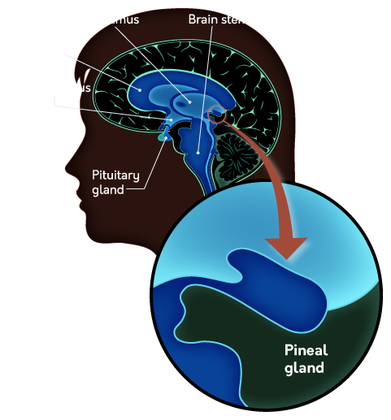

Summary
- Psychology is the scientific study of behavior and mind and is
rooted in the disciplines of philosophy and physiology.
- Early philosophers thought that the mind and body were separate, but
modern psychologists reject this idea—the mind is understood to be “what
the brain does.”
- There are two types of work within psychology: basic and applied.
Research (both basic and applied) answers questions about psychology,
while applied practice puts those answers to work solving problems in
the real world. Clinical practice is a form of applied
- The difference between empiricism and nativism is whether knowledge
must be learned or is innate; both are relevant to our understanding of
how people understand the world around them.
- The theory of evolution and the concept of natural selection have
been very influential in the field of psychology, shaping how we
understand the function of the brain.
- Wilhelm Wundt founded the first psychology laboratory at the
University of Leipzig in Germany, initiating the formal scientific study
of psychology.
- The structuralist movement in psychology sought to break down
conscious experience to its most basic elements using systematic
introspection, while the functionalist movement preferred to consider
psychological processes in terms of their functions.
- William James is considered the “father of American psychology” and
helped to widely popularize both psychology and functionalism in North
America.
- The behaviorist movement in psychology discounted the study of the
mind and mental processes in favor of analyzing only observable
behavior; this movement helped refine and improve psychology as a
- The computer helped spark the cognitive revolution in psychology,
which was a return to studying mental processes (using computer
processing as a metaphor for mental processing).
- Freud made efforts to understand the unconscious mind through
psychoanalysis, a method used to treat mental disorders.
- The humanists preferred to consider the treatment of mental illness
in terms of helping people become their best selves, contrary to Freud’s
darker view of human nature.
- Multiple levels of explanation are often necessary when considering
psychological phenomena: Ultimate explanations consider the evolutionary
purpose of a phenomenon, functional explanations consider the immediate
causes, and process-oriented explanations provide mechanistic
explanations (e.g., biological or psychological mechanisms).
- Psychologists today often take an eclectic approach to understanding
behavior and mind, applying various perspectives as needed; these
perspectives include considering psychological phenomena evolutionarily,
culturally, biologically, and cognitively.
Introduction
psychology: scientific study of both behavior and mind
Early Work
- initial thought related to psychology was done by
philosophers in the philosophy of mind
- Aristotle introduced the term tabula rasa (blank slate) to
describe the mind, considering it a place of potential for experience to
write upon
- many information was collected by
physiologists
- because psychology is focused on the mind through
behavioral evidence
- often considered to be a union of philosophy and physiology
- many early psychologists attempted to answer the questions asked by
philosophers with evidence gathered by physiologists
- Pythagorus believed that “reality” had an
underlying mathematical order
- Earnst Weber developed Weber’s Law, which
shows that the mind follows a mathematical order
- Herman Von Ebbinghaus developed the forgetting
curve, which links psychology to mathematics
- these early psychological results suggested that the mind works in a
way that can be captured in mathematics
- helped convince others that psychology could be science
Mind, Body, and Behavior
- psychology uses sciencific method
- this method is rooted in a philosophical tradition called
empiricism (view that knowledge arises directly from
what we observe and experience)
- psychology is inherently observational in nature
- but psychology is interested in mind (contents of conscious
experience), which is entirely unobservable
- psychologists use behavior to make
inferences about the mind (how reliable these inferences are is
up for debate)
- observable behavior are the primary form of
evidence in psychology
- dualism: philosophical position that the
mind and the body are separate
entities
- described by 17th century Rene Descartes
- mind is inherently immaterial
- reflex: the body acts without conscious action (without the
mind)
- where conscious movement involves signals from the brain, reflexes
are handled entirely by the spinal cord
- but dualism removes psychology from the realm of scientific
inquiry
- pineal gland (small, pine cone-shaped)

|
Aristotle
|
Descartes
|
(Humans: Rational Soul
(Animals: Sensitive Soul
(Plants: Vegetative Soul
Reproduction, Growth)
Mobility, Sensation)
Thought, Reflection)
|
mind: spiritual
⇃↾
body: physical
|
- Descartes (end 1700s):
- body is physical, therefore can be studied scientifically
- animals are only biological machines that reacts to the nature
- won’t feel pain bc they are machines (eg crushed car)
- vivisection + animal experience
- Galvani (biologist):
- apply electrical current to a frog leg makes it contracts
- just like machine
- Broca
- found Broca’s area where if damaged, can understand
language but can’t produce
Psychologists
Basic Research
attempt to understand the fundamental principles that govern
behavior and mind
find
causes
| Abnormal |
how and why unsusal patterns develop |
how depression might develop after a traumatic event |
| Behavioral Genetics |
linking individual differences in behavior to
genetic factors |
genetic markers for autism, schizophrenia |
| Congnitive |
how people process information in general |
how people transform sensations by the eyes into an understandable
image |
| Comparative |
non-human animal behavior, often looking for
commonalities with humans |
if a certain chemical affects eating behavior in mice before
studying it in humans |
| Developmental |
how and why behavior changes across the
lifespan |
how childern learn to speak, why memory declines in old age |
| Behavioral Neuroscience |
linking specific behavior patterns to physical components in
the brain |
linking the processing of faces to a specific area of brain
cortex |
| Personality |
how and why people differ, how these differences
may influence behavior |
how extraversion predicts specific behavior patterns |
| Social |
how people understand themselves and others, how
behavior can be influenced by other people |
how and why people are persuaded by an argument |
- reseach should be conducted on a wide variety of individuals
- otherwise can lead to skewed results
Applied Psychology
to solve practical problems by changing behavior (eg resolve mental
health, improve workplace efficiency/educational outcome)
find
solutions - divisions (a psychologist can be in many of
them) - applied reseach - to discover a new/more
efficient way to solve specific problems - applied
practice - actual application of techniques to the problems -
translational research - to translate basic findings
into practical solutions
| Consumer Behavior |
the decisions consumers make |
| Educational |
improve learning in various educational
settings |
| Forensic & Legal |
apply psychological principles to features of the
legal system |
| Human Factors |
Design products/processes to improve usefulness or comfort for the
people |
| Health |
improve long-term physical health andh healthcare |
| Industrial & Organizational |
improve member performance, motivation |
| Political |
understand the role of psychology in the political process |
| School |
improve the academic and social experiences of children in
school |
- authentic learning
- what the student does may actually have an impact after the
activity
- make learning more engaging because it continues to exist
Clinical Psychology
identify, prevent, relieve distress or dysfunction that is
psychological is origin (basically just applied psy focused on mental
health)
- clinical psychologists are contrasted with
psychiatrists (medical doctors focused on the diagnosis
and treatment of mental illness)
- psychiatrists: have different training, need to
complete medical school, can prescribe medication
- they work together
- conseling psychologists
- deal with less severe mental illness
- help people deal with ongoing life problems
History
Influential Themes
Nature vs Nurture
to what extent is the human experience shaped by nature, and to what
extent doesnt the environment play a role?
- opposite of empiricism: nativism (some forms of
knowledge are innate)
- aka biological determinism
- optical illusions exists even in newly-sighted people: not all
knowledge is a result of experience
Evolutionary Psychology
Charles Darwin: over the course of many generations,
traits that tend to be advantageous for survival and reproduction
generally spread through a population more easily than not
advantageous
- adaptive traits tend to spread throughout a population by
natural selection
- variations of phenotypes/genotypes: different
members of a population have all kinds of individual variations
- many variations are heritable
- the struggle for existence: populations can have
way more offspring that resources
- variations in survival & reproductive
rates
- modes of selections
- directional: from one extreme to another (white
moth to black moth)
- stablising: selects the majority (
light
baby(too vulnerable) medium baby heavy baby(hard to
deliver))
- disruptive: favors both ends of spectrum
- sexual: makes themselves attractive to the opposite
sex or defeat the same-sex rivals
- artifical: wolf => dog
Mind-Body Connection
phrenology: study of the shape of the human skull to
associate brain areas with specific characteristics, thoughts, or
abilities
Psychology as a Science
Structuralism
Wihelm Wundt(DEU) established the first
psychological lab
- WW(chemist,physicist) wanted to break mind down
into fundamental pieces: structuralism
- introspection was developed by WW to understand mental
process by relying on participants’ self-reports
Functionalism
William James(USA) thinks understanding of the
function of behavior or mental process is more
important
- introspection got criticised WJ in North America
- func movement was heavily influenced by Darwin (theory of evolution)
Behaviorism
John Watson(USA) suggests the only topic of
psychological study is observable behavior, and mind is
beyond the scope
- introspection get skeptical => not a scientific fashion
- B.F. Skinner was one of the leading thinkers in
behaviorist psychology
- studied operant conditioning: how behavior can be
modified using a system of rewards and punishments
- Eugenics movement was a reflection of a strong bias
towards the power of nature
Cognitive Revolution
shift away from the strict behaviorism
invention of computer was
part of the motivation
- cognitive: algorithms of the mind
- neuroscience: hardware of the mind
- behavior: actions supported by the mind
Psycholog in the Clinic
Psychoanalysis
Sigmund Freud developed psychoanalysis that
seeks to help clients gain more insight into their
unconscious thought, behaviors, and motivations
- focus on unconscious urges related to sexual frustration and
aggression
Humanists
Carl Rogers and Abraham Maslonw
respond to Freud’s dark view of the human condition:
humanistic psychology proposes that people have free
will and the capacity to realise their own potential
- focus an positive aspects of the human condition (eg creativity,
choice)
Modern Approaches
clinics use the eclectic approach: use different therapeutic
approaches based on their effectiveness for the current situation
Ultimate and Proximate
there are mulitple ways to explain a psy phenomenon
- levels of explanation:
- ultimate: why a psy phe occurs by
appealing to its role in the process of evolution
eg baby cries
==(evolutionary role)=> signal to caregivers
- proximate: describe an immediate cause:
- functional: identify a specific problem as the
cause
eg get a caregiver to provide food
- process-oriented: how a specific mental/physical
process explains a psy phe
eg experience of fear => tears in the
eyes
- U and P explanations and complementary as they
explain different aspects of the same phe
- not all phe are products of evolutions
Evolutionary Influences
- not everything can be explained with evolution
- how does helping someone else (altruism) improve your own
survibility
- evolutionary psychologists’ claims are hard to verify because it’s
difficult to know exactly what happened in the
past
Cultural Influences
culture: shared set of beliefs, attitudes,
behaviors, and customs belonging to a specific group of people
- early work on cultural influences focused on finding
psychological universals that exist across
cultures
- intersectional approach: how multiple social
identities intresect at the level of the individual person to alter
their experiences
Biological Influences
process-oriented explanations
are typically biological (descriptions of the physical
processes to explain a psychological process)
Congitive Influences
primarily process-oriented expls about mental processes
- psychologists investigate the role of informamtion
processing on a situation